Step reference¶
Catalog of every step you can place on the Job editor canvas, derived from JobEditor.populateListItems(). Part of the User Guide.
Status: complete — all in-scope steps documented. Two remain open:
Datasourceis a placeholder pending input, andWrite Incidentis deferred. (Living doc — update as the UI evolves.)
Scope. This reference covers the actively-documented platforms: Redshift, Snowflake, ClickHouse, SparkSQL. (All other platforms — Netezza, Yellowbrick, Greenplum, DashDB, Firebolt, Databricks, SQLWarehouse, Exasol, Synapse — are out of scope.)
Steps fall into three tiers: - Common steps — available on all documented platforms. - MPP-common steps — on every MPP platform (all of the above except SparkSQL). - Platform-specific steps — only on one platform (mostly the per-platform load target).
Legend: 🟢 documented · 🟡 placeholder (to expand) · ⬜ to do.
Common steps¶
Present on all documented platforms (the global control/transfer/script set is added to every job type; the data/transform/DQ items below are common to both the MPP and SparkSQL palettes).
Sources & input¶
| ⬜ | Step (palette label) | Type | What it does |
|---|---|---|---|
| 🟢 | Jdbcsource | JDBCSOURCE |
Parallel JDBC extractor — pulls source data into staged flat files for a JdbcTarget; auto-partitioned parallel reads + watermark-based incremental. |
| 🟡 | Datasource | DATASOURCE |
Placeholder. Corelli pipeline source for non-JDBC sources via a general connection (MongoDB, Salesforce, other connectors). Like Jdbcsource, it stages data for a downstream JdbcTarget — the engine requires the data-provider step to be a Jdbcsource or Datasource. Full details TBD. |
| 🟢 | Onstagegroup | ONSTAGEGROUP |
Bulk schema/group loader — loads multiple source tables into a target schema in one step, staged through object storage, with per-table watermark/key incremental merge. Platform-specific dialog. |
Jdbcsource¶
Type JDBCSOURCE · WPF Steps/Pipeline/JdbcSource.cs → JdbcSourceWindow.xaml ("Corelli Parallel Jdbc Extractor") · pairs with a JdbcTarget<Platform>
Extracts data from a source database and writes it to staged flat files that a platform-specific JdbcTarget… step then loads (JdbcTargetRedshift, JdbcTargetClickhouse, JdbcTargetSnowflake, …). On its own it only extracts and stages — it must be wired to a JdbcTarget.
Parallel extraction (auto-partitioning). Turn on Auto partitioning over a numeric or timestamp incrementing column. Maestro runs a MIN/MAX query and generates multiple WHERE-condition "buckets" — e.g. 100 rows with Rows/Partition = 10 → 10 buckets — and runs Threads of them at a time (default 4 = the parallelism factor). Leave Delim as pipe (|). Use Meta Data / Preview to inspect the dataset first.
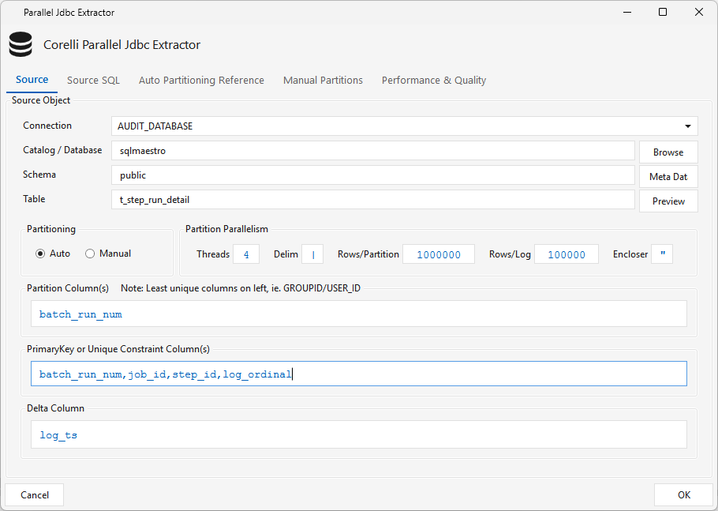
Source SQL tab — the SELECT that runs on the source; $EXTRACT_CONDITION is filled in at runtime (the incremental watermark filter).
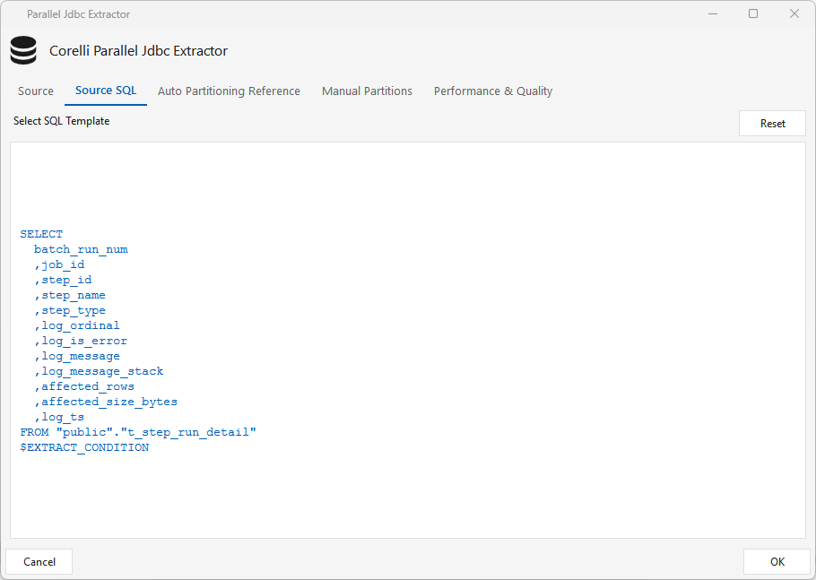
Incremental loads. After the initial full parallel load, set a Delta Column (e.g. log_ts). On each scheduled run, the target's Delta Watermark MAX value is pushed back as the source's $EXTRACT_CONDITION, so only new rows are pulled.
- Auto Partitioning Reference tab — for very large tables where MIN/MAX is slow, point partition sampling at a smaller reference table; leave "ref table same as source" checked if not needed.
- Manual Partitions tab — when Manual partitioning is selected you must supply the extraction-criteria conditions here (the per-bucket
WHEREexpressions — one partition per condition); in Auto mode, any expressions added here override the auto-partitioning logic. - Performance & Quality tab — date/timestamp formats, fetch size, optional SAP zero-padding, Standardize Data (strip CR/LF/delimiter/quotes), and an Encode list that base64-encodes selected columns so special characters survive the flat file — the target decodes them with the platform's base64 function.
- Read Uncommitted — when checked, the extract runs its
SELECTat the READ UNCOMMITTED isolation level (the session-level equivalent of SQL Server'sWITH (NOLOCK)) so it neither blocks, nor is blocked by, writers on the source. On by default for new steps — the default is set org-wide by theonstage_read_uncommittedSystem Setting. It is applied only where the source database supports it (e.g. SQL Server, MySQL, DB2) and safely skipped where it doesn't (e.g. Oracle).
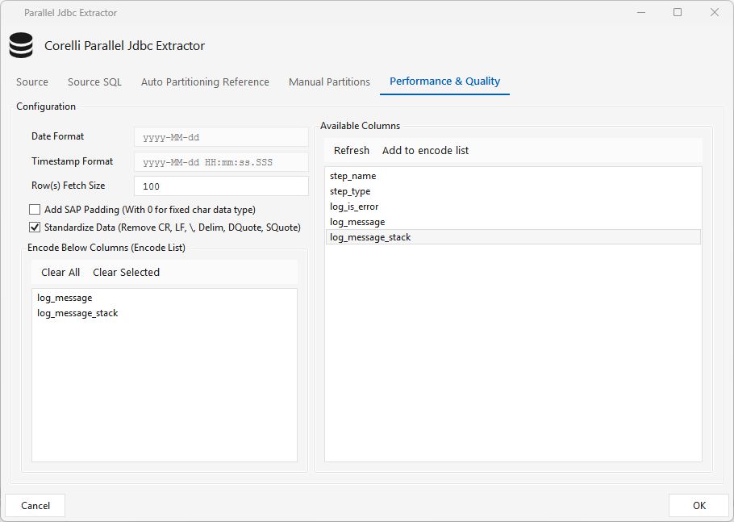
Incremental extract with the data-validity variables¶
Instead of the Delta Watermark (which drives incrementals off the target's MAX(column)), you can extract fixed calendar windows using the batch data-validity runtime variables. Set the workflow's batch cycle type to the cadence you want — e.g. DAILY — via right-click ▸ Action(s) ▸ Change Batch Cycle Type (without it the job runs as ONREQ, a 5-minute window). Then filter on a modified-date column in the Source SQL.
Three variables are set once per run (full reference):
| Variable | Role in the window |
|---|---|
$BATCH_START_DATA_VALIDITY_TIMESTAMP |
lower bound (inclusive) — the start of the slice this run loads |
$BATCH_END_DATA_VALIDITY_TIMESTAMP |
exclusive upper bound — the start of the current in-progress period (.000) |
$BATCH_DATA_VALIDITY_PERIOD |
end of the last complete period (.999) = START − 1ms |
Note:
STARTis the lower bound (slice start) andENDis the upper bound (slice limit). This half-open[START … END)form uses only.000timestamps, which avoids the SQL Serverdatetimerounding gotcha below.
Source SQL (SQL Server):
SELECT
[OrderID], [CustomerID], [OrderStatus], [OrderAmount], [LAST_MODIFIED_DATE]
FROM [dbo].[Orders]
WHERE [LAST_MODIFIED_DATE] >= '$BATCH_START_DATA_VALIDITY_TIMESTAMP'
AND [LAST_MODIFIED_DATE] < '$BATCH_END_DATA_VALIDITY_TIMESTAMP'
How it works — sample variable values across runs (DAILY):
| Run day | $BATCH_START_DATA_VALIDITY_TIMESTAMP (≥) |
$BATCH_END_DATA_VALIDITY_TIMESTAMP (<) |
$BATCH_DATA_VALIDITY_PERIOD |
Rows pulled |
|---|---|---|---|---|
| First run (Jul 9) | 1990-01-01 23:59:59.999 (sentinel) |
2026-07-09 00:00:00.000 |
2026-07-08 23:59:59.999 |
everything through Jul 8 (full backfill) |
| Jul 10 | 2026-07-09 00:00:00.000 |
2026-07-10 00:00:00.000 |
2026-07-09 23:59:59.999 |
all of Jul 9 |
| Jul 11 | 2026-07-10 00:00:00.000 |
2026-07-11 00:00:00.000 |
2026-07-10 23:59:59.999 |
all of Jul 10 |
The Jul 10 run resolves to:
WHERE [LAST_MODIFIED_DATE] >= '2026-07-09 00:00:00.000'
AND [LAST_MODIFIED_DATE] < '2026-07-10 00:00:00.000'
2026-07-09 00:00:00.000, END = 2026-07-10 00:00:00.000)
After each run the engine stores that run's PERIOD (…23:59:59.999) as its watermark; the next run's START = that + 1ms = the next day's 00:00:00.000. So one day ends at …23:59:59.999 and the next begins at …00:00:00.000 — 1 ms apart, no gap and no overlap. The first run's START is the 1990 sentinel, so it backfills everything up to yesterday. Change DAILY to any other batch cycle type (HOUR, WEEK, MONTH, …) and the same query slices by that grain.
Default ONREQ (5-minute window) — a real two-run example. With no batch cycle type set, a workflow runs as ONREQ, a rolling 5-minute window. Two consecutive runs five minutes apart tile exactly the same way:
| Run | $BATCH_START_DATA_VALIDITY_TIMESTAMP (≥) |
$BATCH_END_DATA_VALIDITY_TIMESTAMP (<) |
$BATCH_DATA_VALIDITY_PERIOD |
|---|---|---|---|
| First run (15:05) | 1990-01-01 23:59:59.999 (sentinel) |
2026-07-10 15:05:00.000 |
2026-07-10 15:04:59.999 |
| Next run (15:10) | 2026-07-10 15:05:00.000 |
2026-07-10 15:10:00.000 |
2026-07-10 15:09:59.999 |
The first run backfills everything up to the current 5-minute boundary; the next run resumes exactly where it left off (15:04:59.999 → 15:05:00.000, 1 ms apart). Every batch cycle type behaves identically — only the window length changes.
SQL Server notes:
- Half-open vs BETWEEN. If LAST_MODIFIED_DATE is the legacy datetime type, SQL Server rounds sub-second values to 1/300 s, so the .999 PERIOD literal rounds up to the next day's 00:00:00 and would double-count the boundary. The ≥ START … < END form uses only .000 bounds, avoiding this. Use BETWEEN '$BATCH_START_DATA_VALIDITY_TIMESTAMP' AND '$BATCH_DATA_VALIDITY_PERIOD' only for exact-precision columns (datetime2 / date).
- Read Uncommitted. Enable the step's Read Uncommitted option (above) — session READ UNCOMMITTED — or add WITH (NOLOCK) after [dbo].[Orders]. Do one, not both.
- Quotes. The engine substitutes the raw timestamp text, so wrap each variable in single quotes to form valid datetime literals; use [schema].[table] bracket quoting for identifiers.
Other source databases. The window logic is identical on every JDBC source — the engine substitutes the same YYYY-MM-DD HH:MM:SS.mmm text into whatever SQL you write. Only three things change per dialect: identifier quoting, whether the string literal needs an explicit cast to a timestamp, and whether Read Uncommitted applies. Below is the same DAILY half-open window (≥ START … < END) for the common sources.
| Source | Timestamp literal | Identifier quoting | Read Uncommitted |
|---|---|---|---|
| PostgreSQL / Redshift | implicit cast; add ::timestamp if the column is timestamptz |
"schema"."table" (double quotes, optional) |
no-op — MVCC, leave off |
| MySQL / MariaDB | implicit cast | `schema`.`table` (backticks) |
supported |
| Oracle | explicit TO_TIMESTAMP(…, 'YYYY-MM-DD HH24:MI:SS.FF3') |
SCHEMA.TABLE (uppercase) |
not supported — engine skips it (Oracle is MVCC) |
| Snowflake | implicit; ::timestamp_ntz pins no-timezone |
unquoted folds to UPPERCASE; "…" only if created case-sensitive |
n/a — READ COMMITTED only |
| ClickHouse | toDateTime64(…, 3) for millisecond grain |
`db`.`table` (backticks) |
n/a |
PostgreSQL / Redshift
SELECT order_id, customer_id, order_status, order_amount, last_modified_date
FROM sales.orders
WHERE last_modified_date >= '$BATCH_START_DATA_VALIDITY_TIMESTAMP'
AND last_modified_date < '$BATCH_END_DATA_VALIDITY_TIMESTAMP'
MySQL / MariaDB
SELECT `order_id`, `customer_id`, `order_status`, `order_amount`, `last_modified_date`
FROM `sales`.`orders`
WHERE `last_modified_date` >= '$BATCH_START_DATA_VALIDITY_TIMESTAMP'
AND `last_modified_date` < '$BATCH_END_DATA_VALIDITY_TIMESTAMP'
Oracle — Oracle will not implicitly convert the millisecond literal, so wrap each bound in TO_TIMESTAMP. This also works for a plain DATE column (Oracle promotes the DATE to TIMESTAMP for the comparison).
SELECT ORDER_ID, CUSTOMER_ID, ORDER_STATUS, ORDER_AMOUNT, LAST_MODIFIED_DATE
FROM SALES.ORDERS
WHERE LAST_MODIFIED_DATE >= TO_TIMESTAMP('$BATCH_START_DATA_VALIDITY_TIMESTAMP', 'YYYY-MM-DD HH24:MI:SS.FF3')
AND LAST_MODIFIED_DATE < TO_TIMESTAMP('$BATCH_END_DATA_VALIDITY_TIMESTAMP', 'YYYY-MM-DD HH24:MI:SS.FF3')
Snowflake
SELECT order_id, customer_id, order_status, order_amount, last_modified_date
FROM sales.orders
WHERE last_modified_date >= '$BATCH_START_DATA_VALIDITY_TIMESTAMP'::timestamp_ntz
AND last_modified_date < '$BATCH_END_DATA_VALIDITY_TIMESTAMP'::timestamp_ntz
ClickHouse
SELECT order_id, customer_id, order_status, order_amount, last_modified_date
FROM sales.orders
WHERE last_modified_date >= toDateTime64('$BATCH_START_DATA_VALIDITY_TIMESTAMP', 3)
AND last_modified_date < toDateTime64('$BATCH_END_DATA_VALIDITY_TIMESTAMP', 3)
The sample-values table above (First run → Jul 10 → Jul 11) applies unchanged to every dialect; substitute your own schema, table, and modified-date column. For an inclusive BETWEEN … '$BATCH_DATA_VALIDITY_PERIOD' form instead of half-open, the .999 upper bound is only safe on exact-precision timestamp types (avoid it on SQL Server datetime and on MySQL DATETIME(0), which round/truncate the fraction).
Onstagegroup¶
Type ONSTAGEGROUP · "Onstage Schema Loader" · platform-specific class/dialog:
| Platform | WPF |
|---|---|
| Redshift | Steps/Redshift/RSGroupLoader.cs → RSGroupLoaderWindow.xaml |
| Snowflake | Steps/Snowflake/SnowGroupLoader.cs → SnowGroupLoaderWindow.xaml |
| ClickHouse | Steps/Clickhouse/CHGroupLoader.cs → CHGroupLoaderWindow.xaml |
| SparkSQL / Synapse | Steps/Spark/SparkGroupLoader.cs → SparkGroupLoaderWindow.xaml |
Loads multiple tables from a source schema into a target schema in a single step. The dialog (shown here for Redshift) has two tabs.
Schema tab — set the Source (connection, catalog/database, schema) and Target (catalog/database, schema), plus platform-specific Configurations. For Redshift those are the S3 Connection (Maestro staging), Initial Refresh Partitions, and the S3 Upload / S3 Clean / Copy-Load commands. (Configurations differ by platform.)
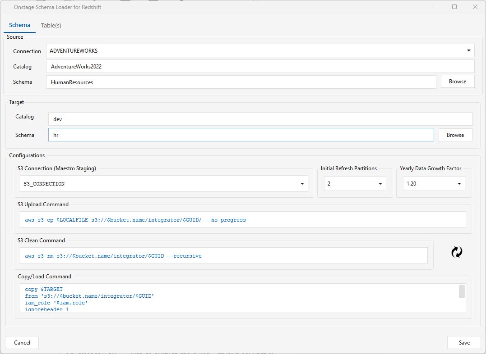
Table(s) tab — select one or more tables from Available Source Table(s) on the left and click > to add them. Each target table is named database/schema/table. For each table set:
- Watermark(s) — a timestamp, date, or incrementing numeric column (e.g. a sequence). The watermark value drives incremental loads — only rows past the last watermark are pulled and merged into the target.
- Key(s) — the column(s) the incremental merge keys on.
If the Watermark/Key dropdowns are empty, click Refresh Metadata.
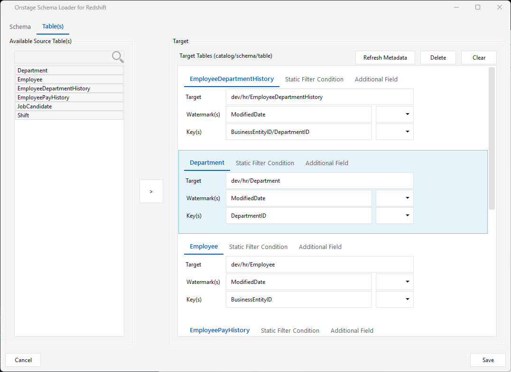
Static Filter Condition (per table) — overrides the delta filter that runs on the source. Use it for a custom delta window (e.g. modified_date > current_date - 3) or a full load with 1=1 (you still pick a watermark/key, but the static filter forces a full extract).
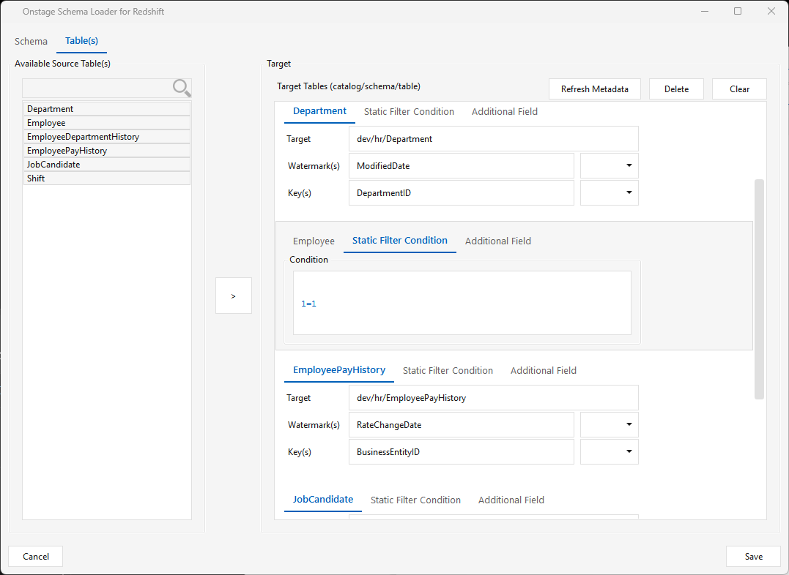
Caveat: a source table whose name contains special characters will not load.
SparkSQL variant — "Onstage Schema Loader for Spark". On SparkSQL the target is an HDFS folder, not a database schema. Pre-create the destination directory on HDFS, e.g.:
Then on the Schema tab the Target group shows Catalog = none (disabled) and a Folder field — click Browse to pick that directory from the HDFS tree (browsed over the Spark driver connection, e.g. ELTM_SPARK_DRIVER). The Source group and the Table(s) tab work the same as the other platforms. Load Configurations: Initial Load Partitions · Initial Load Threads · Run Count Metrics.
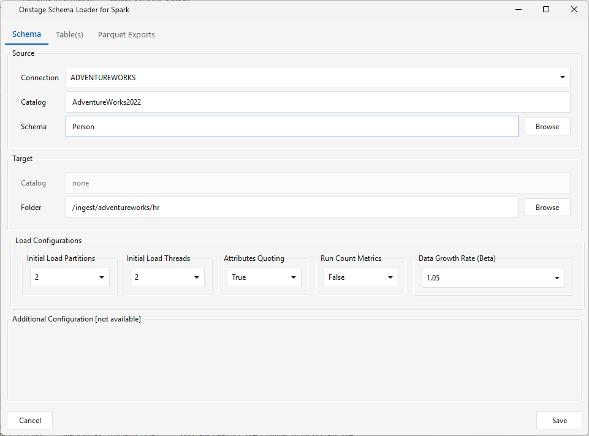
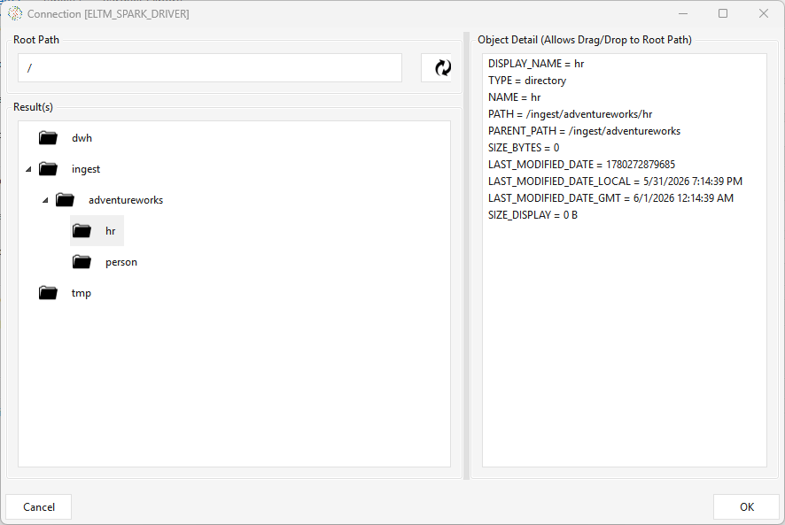
On run, the loader pulls the selected source tables into the target folder, creating one subdirectory per table and writing the data as Parquet files (e.g. /ingest/adventureworks/hr/<table>/…). A separate Parquet Exports tab can additionally push that output to S3 / Azure Blob via a CLI command.
Transforms¶
| ⬜ | Step | Type | What it does |
|---|---|---|---|
| 🟢 | Datamask | DATAMASK |
Masks/obfuscates PII columns — applies the platform hash function ($HASH_TEMPLATE → $HASH_RETURNS type) to columns you tag mask, with an optional name postfix. 1 input. (PII / GDPR / HIPAA redaction.) |
| 🟢 | Dedupe | DEDUPE |
Removes duplicate rows — pick key column(s) + a sort/order expression; keeps one row per key (the first by the sort order) via ROW_NUMBER() OVER (PARTITION BY keys ORDER BY sort). 1 input. |
| 🟢 | Filter | FILTER |
Row filter — keeps only rows matching a boolean condition built in the expression editor ("Filter Condition"). 1 input → same columns out. |
| 🟢 | Aggregate2 | AGGREGATE2 |
Same dialog as Function2 (aggregate emphasis) — group-by + aggregate output columns. 1 input. |
| 🟢 | Function2 | FUNCTION2 |
Column expression editor — define output columns as scalar F(x) or aggregate Σ(x) with alias/type/expression, plus WHERE/HAVING. 1 input. |
| 🟢 | Join | JOIN |
Joins multiple sources ($N aliases) — pick the first source, add INNER/LEFT/… conditions + ON expressions, define aliased output columns. Multi-input. |
| 🟢 | Minus | MINUS |
Set difference — outputs rows in source A that are not in source B (you pick which input is A). 2 inputs. |
| 🟢 | Union | UNION |
Combines two sources — toggle Union (distinct) vs Union All (keep duplicates); map the output columns. 2 inputs. |
| 🟢 | Pivot | PIVOT |
Pivots rows → columns — distinct values of the pivot column become new columns, aggregated from a value column. Needs a Key column marked on the source. Output table drop-and-created each run in $SYSTEM_DEFAULT_SCHEMA. 1 input. |
Function2 & Aggregate2¶
Type FUNCTION2 / AGGREGATE2 · WPF Steps/CommonTransform/Function2.cs → Function2Window.xaml ("Function Expression Version 2.0") · 1 input
The column expression editor — both palette entries open the same dialog (Aggregate2 is the same step surfaced with aggregate emphasis). For each output column pick a Mode:
- F(x) — a per-row scalar expression (these columns form the GROUP BY when any aggregate is present);
- Σ(x) — an aggregate (e.g. COUNT(*), SUM(...)),
…each with an Alias, Type, and Expression. Functions / operators / constants come from the function catalog; the Filters tab adds WHERE / HAVING conditions. Full walkthrough: Configuring a step — the expression builder.

Join¶
Type JOIN · WPF Steps/CommonTransform/MPPJoin.cs → MPPJoinWindow.xaml · multi-input
Joins multiple input sources into one output. Each inbound source is referenced by a $N alias, where N is the inbound arrow's step ID (e.g. $4 = Employee, $5 = EmployeeDepartmentHistory).
- Input — Sources lists the connected steps by alias; Columns lists their columns (Add To Output to emit one).
- Join Condition(s) — pick the First Join Source, then add conditions: Type (INNER / LEFT / …), Join With ($N), and the ON expression (e.g. $4.`BusinessEntityID` = $5.`BusinessEntityID`).
- Output Columns — each output's Name ($N.column), Type, and Alias; Fix Alias repairs broken $N references.
Check Mapping validates that every join / output / input alias resolves to a connected source.
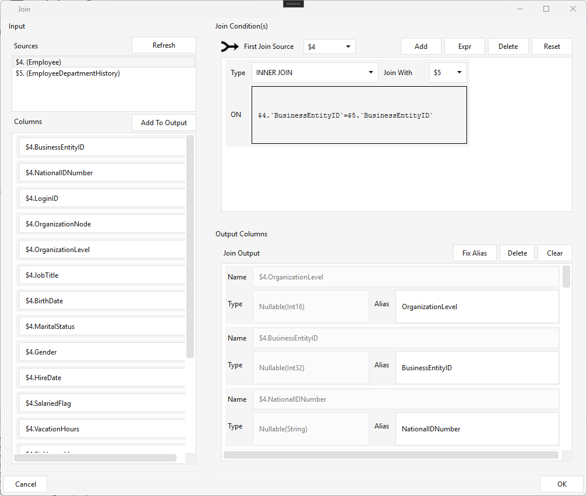
Pivot¶
Type PIVOT · WPF Steps/CommonTransform/Pivot.cs → PivotWindow.xaml ("Pivot Transformation") · 1 input
Pivots rows into columns — the distinct values of the Pivot ON column become new output columns, populated by an aggregate of the Pivot Value column. In the dialog:
- Pivot Table Name — unique name for the generated pivot table.
- Pivot ON Column or Expression — the column whose distinct values become new columns (e.g. jobtitle).
- Pivot Value Column or Expression — the value to aggregate (e.g. businessentityid).
- Aggregate function — applied to each generated column (e.g. count($COLUMN), sum).
- Pivot-Output Column Name Prefix and Max Generated Column(s) (default 256).
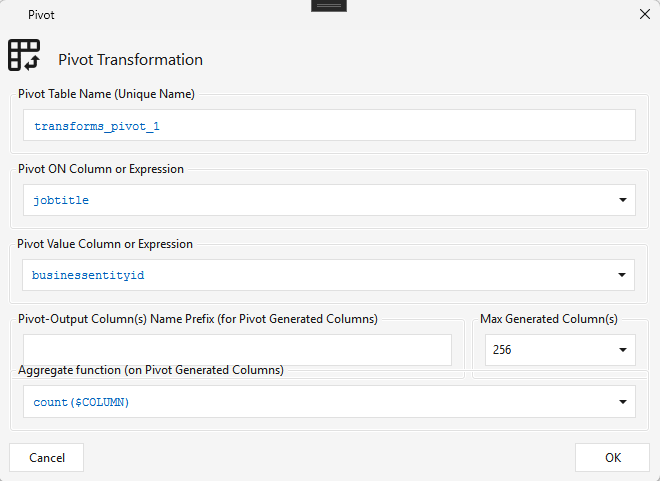
Requires a Key on the source. The upstream source/Table step must have a Key column checked (e.g. businessentityid marked Key on the employee Table step) — the pivot groups on that key.
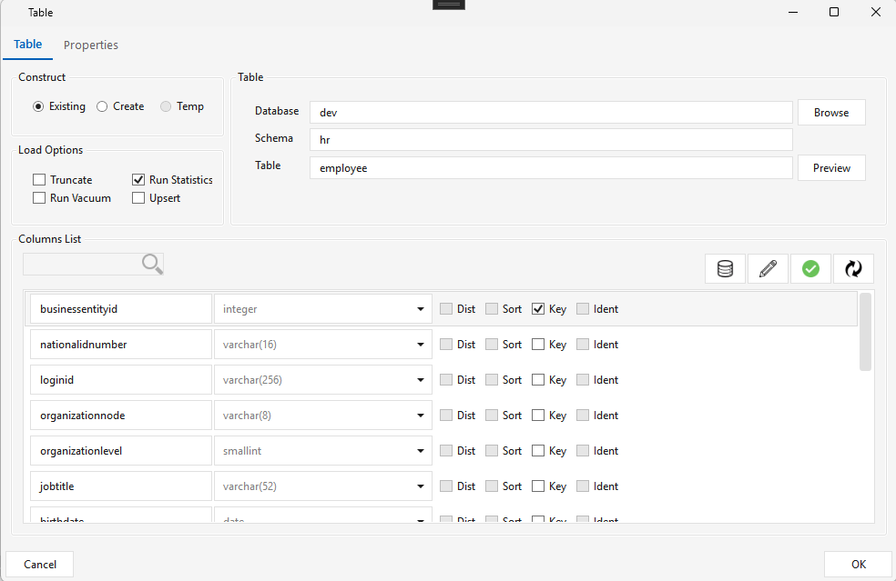
The result turns each distinct pivot value into its own column (one row per key):
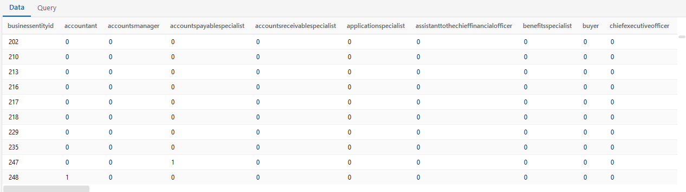
⚠️ Output table is drop-and-created on every run in the system default schema (
$SYSTEM_DEFAULT_SCHEMAinsystem.cfg, e.g.integrator), so newly-arriving pivot values can add columns.
Data quality¶
| ⬜ | Step | Type | What it does |
|---|---|---|---|
| 🟢 | Control Test | CONTROLTEST |
Data-quality test — measures correctness/reasonableness of data. Defined first in Administration ▸ Metrics Configuration ▸ Control Test (name, type, tolerance, an expected-value query vs an actual-value query → pass/fail), then selected in the workflow. The Manage Control Tests window lists all tests in a searchable grid; New / Edit (or double-click a row) opens an editor with the test's fields, query Test (preview) buttons, and Save. Test type M = a measurement probe for trending (DB-size growth, counts, …) rather than pass/fail. |
| 🟢 | Meta Profile | METAPROFILE |
Column profiler — computes per-column statistics (counts, lengths, min/max, percentiles, type-inference) for selected tables and writes them to t_column_profile_results for data observability. The available metric set is platform-specific. |
Managing control tests. Open Administration ▸ Metrics Configuration ▸ Control Test. The Manage Control Tests window lists every test in a searchable grid — Name, Type, Tolerance, Expected/Actual connection, and who last changed it — with Refresh, New, and Edit (double-clicking a row edits it too):
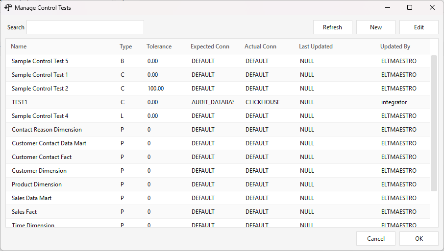
New or Edit opens the editor in its own window: the test Name, Description, Tolerance, Type, and a Test ID, plus Expected Value and Actual Value tabs — each with a Connection picker, a query, and a Test button that previews the query. Save writes the test to the server:
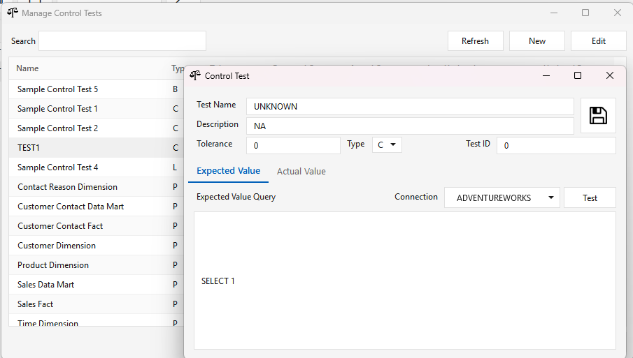
Meta Profile¶
Type METAPROFILE · WPF Steps/CommonTransform/MetaProfile.cs → ColumnProfiler.xaml ("ColumnProfiler")
Profiles the columns of one or more tables — running a set of aggregate metrics over every column and recording the results for data observability (spotting nulls, blanks, skew, unexpected types, or value drift over time). The step dialog has two tabs.
Table(s) tab. Pick a Connection (the read-only Catalog / Schema fill in from it), click Browse to list its tables, then select tables in Available Table(s) (there's a search box) and Add >> them to Table(s) to Profile. Remove takes one back out.
Profile(s) tab. Available Metric(s) lists the metric catalog filtered to the job's platform (Redshift / Snowflake / ClickHouse each have their own dialect-correct expressions) — so the choices you see depend on the workflow's target. Select the metrics you want and Add To List >> to move them into Selected Metrics Profile(s) (Remove Selected Metric(s) takes them back out). Roughly 22 metrics ship per platform, e.g. distinct_cnt, not_null_cnt, len_min / len_avg / len_max, empty_cnt / blank_cnt, val_min / val_max / val_median / val_p95, and the type-inference counts int_cnt / double_cnt / date_cnt / timestamp_cnt / boolean_cnt. Use New (or Modify an existing one) to author a custom metric — a name, a description, and a SQL scalar/aggregate expression written over the $column token (e.g. count(distinct $column)); it's saved to the platform's metric catalog and becomes reusable.
Output. On each run the engine evaluates every selected metric against every column of every chosen table and writes the results to public.t_column_profile_results — one row per table × column × metric (connection_name, table_path, column_path, column_name, metrics_name, metrics_result) — via the audit (ABC) Postgres connection. Query that table to trend a column's profile across runs. Note: a metric that errors for a given column (e.g. a numeric aggregate on a text column) is recorded as 0 and the job still completes, so treat a bare 0 as "not measured" rather than a real value.
Control¶
| ⬜ | Step | Type | What it does |
|---|---|---|---|
| 🟢 | Sync | SYNC |
A barrier / sync point (aka dummy step) — does nothing itself. Use it to control parallelism: point arrows from N parallel steps/threads into one Sync step so it acts as a stopper that waits for all N to finish, then the next steps fire from its output. No config. |
| 🟢 | Switch | SWITCH |
Routes flow on the success/failure status of the incoming pipeline — assign downstream steps to a success path vs a failure/recovery path. 1 input, ≥2 outputs. |
| 🟢 | File Watch | FILEWATCH |
File sensor — watches an SSH server's directory for a file to arrive, polling until found or timeout. |
| 🟢 | Jdbc Watch | JDBCWATCH |
Database sensor — re-runs a SQL query until its result matches a value (success) or times out (failure unless enforced). |
| 🟢 | Script Watch | SCRIPTWATCH |
Script sensor — re-runs a shell/script until its output matches a value (success) or times out (configurable state). |
| 🟢 | Set Variable | SETVARIABLE |
Sets a job variable ($VAR_n) from a Fixed value, a SQL query result, or the first line of a Shell script's output. |
| 🟢 | Watermark | WATERMARK |
Persists a high/low watermark at Job or Batch scope; the next run picks the values up automatically for incremental delta logic. |
| 🟢 | Smart Script | SMARTSCRIPT |
An item-list processor: INPUT = a list of values from a shell script (stdout split by newline) or SQL (first-column rows); DECLARATIONS = echo-based per-item transforms; ACTIONS = run a SQL/shell script per item with a parallel-call count (e.g. list files → gzip them 8-way). Variables use a $ prefix. |
Switch¶
Type SWITCH · WPF Steps/Common/SWITCH.cs → SwitchWindow.xaml ("Switch Process Flow") · 1 input, ≥2 outputs
Routes the pipeline flow based on the success/failure status of the pipeline leading into it. Assign each connected downstream step to Run Following On Success or Run Following On Failure (use > to move a step between the lists). Typical use is a recovery path — e.g. a Jdbcsource → JdbcTarget pipeline; if it fails, the Switch fires a recovery step (a SqlScript or any other step) instead of just failing the job.
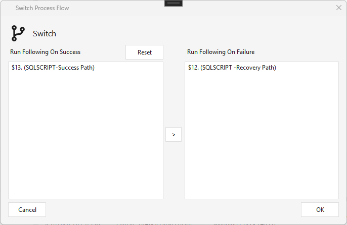
Watermark¶
Type WATERMARK · WPF Steps/Common/Watermark.cs → WatermarkWindow.xaml ("Update Watermark") ·
Persists a High and/or Low watermark value at Job or Batch scope. The values come from variables set during a successful run; on the next run of the same job/batch they're picked up automatically, so you can build incremental delta expressions and other pipeline logic from them. Set either High or Low (or both).
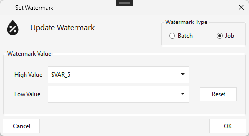
Set Variable¶
Type SETVARIABLE · WPF Steps/Common/SetVariable.cs → SetVariableWindow.xaml ("Set Variable") ·
Sets a job variable ($VAR_n) from one of three Value Type sources:
- Fixed — a static value (or another variable);
- SQL — the result of a SQL query on a connection (e.g. SELECT current_timestamp::date);
- Shell — the first line of a shell script's output.
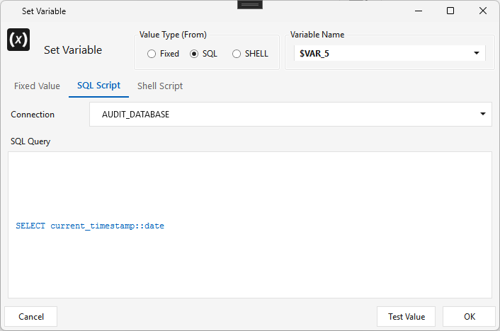
File Watch¶
Type FILEWATCH · WPF Steps/Common/FileWatch.cs → FileWatchWindow.xaml ("File Watch") ·
A file sensor — watches an SSH server for a file to arrive. Supply the SSH Connection, Directory, and File Name; the step polls every File Check Interval minutes up to the Max Wait Timeout, succeeding when the file appears (or timing out). Options: Enforce SUCCESS after Timeout and DELETE File On Normal Success.
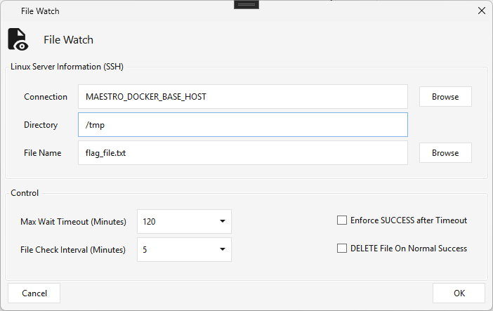
Jdbc Watch¶
Type JDBCWATCH · WPF Steps/Common/JDBCWatch.cs → JdbcWatchWindow.xaml ("Watch JDBC Data State") ·
A database sensor — runs a SQL query on a connection and waits until the first column of the result matches one of the Match Values (e.g. 1, SUCCESS, COMPLETED, READY, LOADED). The query (often a data-quality check returning a count/status) re-runs every Check Interval minutes until either a match → success (the step completes and flow continues), or Max Wait Timeout → failure by default (unless Enforce SUCCESS after Timeout is checked). First-column match limit 100K rows.
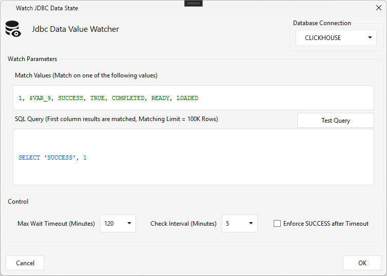
Script Watch¶
Type SCRIPTWATCH · WPF Steps/Common/ScriptWatch.cs → ScriptWatchWindow.xaml ("Watch Script Output") ·
A script sensor — runs a shell script on the local engine server (it can invoke bash, Python, etc.) and waits until its standard output matches one of the comma-separated Value to watch for entries. Re-runs every Check Interval minutes until a match → success, or Timeout → the configurable State After Timeout (default FAILED).
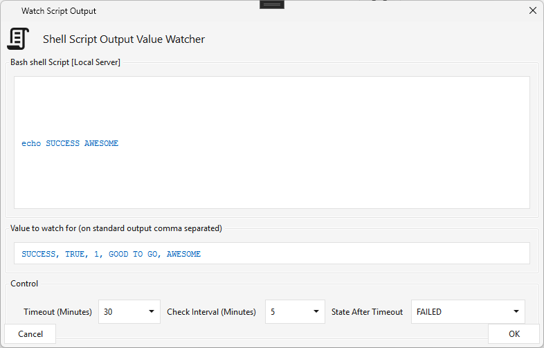
Transfer¶
| ⬜ | Step | Type | What it does |
|---|---|---|---|
| 🟢 | Sftp | SFTP |
Downloads files from an SFTP/SSH server to the local Maestro server (paths can use variables); supports watermark + caches the downloaded-file list. |
| 🟢 | File Scanner | FILESCANNER |
Scans the Maestro server for files via a Linux find command → outputs an array of files to the next step; optional last-modified watermark (skip already-scanned) + an ignore-list DB diff. |
| 🟢 | Push File | PUSHFILE |
Pushes locally-scanned files up to a cloud/general connection. Wire a File Scanner → Push File. |
| 🟢 | Remote File Scanner | REMOTEFILESCANNER |
Cloud equivalent of File Scanner — scans a cloud connection (e.g. S3) under a prefix → outputs an array of files; same last-modified watermark behavior. |
| 🟢 | Pull File | PULLFILE |
Pulls files down from a cloud/general connection to local. Wire a Remote File Scanner → Pull File. |
File Scanner¶
Type FILESCANNER · WPF Steps/Common/FileScanner.cs → FileScannerWindow.xaml ("Local File Scanner") ·
Scans the Maestro engine server for files by running a Linux find command (editable; Test previews the result), and outputs the matched array of file paths to the next step.
- File Scanner tab — the Find Command (bash), a Watermark Name, and Use File-Last-Modified value as watermark: when checked, Maestro tracks the scanned files' last-modified timestamps so it won't rescan the same files next run — each successful run returns only new files.
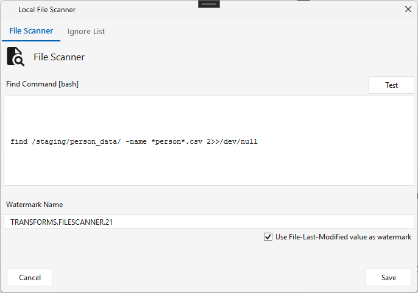
- Ignore List tab — optionally diff against an external "already-loaded" registry: pick a Connection and a Query that returns loaded file names, choose a match Condition (Matches / Contains / Starts With / Ends With), and Maestro removes files already in that list from the output (toggle with Ignore File(s)).
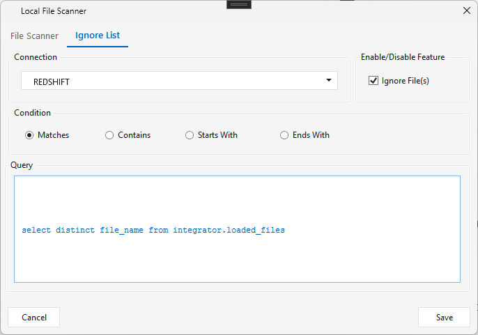
Remote File Scanner¶
Type REMOTEFILESCANNER · WPF Steps/Common/RemoteFileScanner.cs → RemoteFileScannerWindow.xaml ("Remote File(s) Scanner") ·
The cloud equivalent of File Scanner — scans a cloud connection (e.g. an S3 connection) under a Scan Prefix [key] (path) and outputs an array of files to the next step. Same Use File-Last-Modified value as watermark behavior (only new files on the next run). Browse opens the connection to pick/preview the prefix and its files.
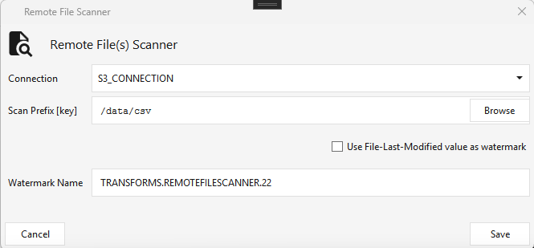
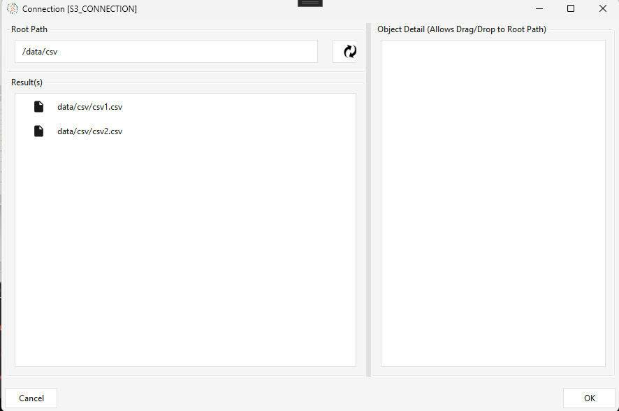
Push File¶
Type PUSHFILE · WPF Steps/Common/PushFile.cs → PushFileWindow.xaml ("Push/Upload File(s)") · requires a File Scanner (or Sftp / Write File) upstream
Pushes the locally-scanned files up to a cloud/general connection.
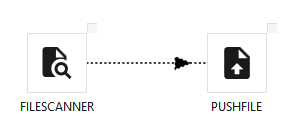
- Destination tab — the target Connection (e.g.
S3_CONNECTION) and Destination Path, with Auto-Clean at destination on success/failure. - Flag Options tab — optionally send a flag file after the upload.
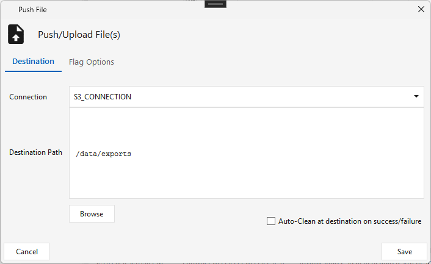
Pull File¶
Type PULLFILE · WPF Steps/Common/PullFile.cs → PullFileWindow.xaml ("Pull/Download File(s)") · requires a Remote File Scanner (or Sftp) upstream
Pulls files down from a cloud/general connection to the local server.
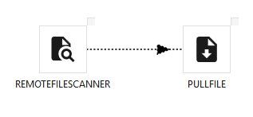
- Server Folder Path — the local destination folder, with Auto-Clean at destination on success/failure.
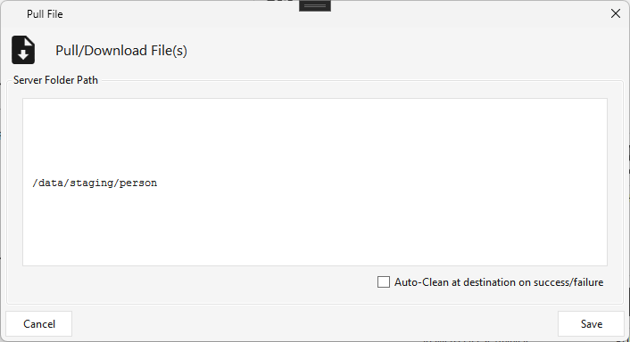
Sftp¶
Type SFTP · WPF Steps/Common/Sftp.cs → SftpWindow.xaml ("SFTP Pull/Download File(s)") ·
Downloads files from an SFTP/SSH server to the local Maestro server, and caches the list of downloaded files for downstream file-ordering steps; supports watermark downloads (only new files next run).
- Source — the SSH Connection, Directory1 (and an optional Directory2), and File/Pattern (e.g. *.csv). Paths can use variables: set $VAR_5/$VAR_6 to (say) a date pattern via a Set Variable step and reference them in the directory (/data/$VAR_5) so the scan targets a date-driven path.
- Target Directory (Maestro Server) — the local folder, with Create directory if not exists.
- Other Options — Use Watermark ($JOB_LOW_WATERMARK_VALUE) and Auto-Clean.
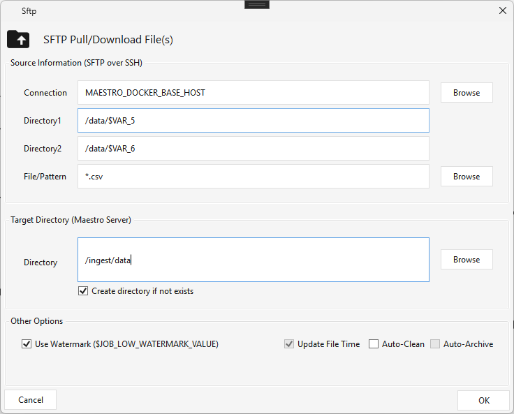
Scripting & jobs¶
| ⬜ | Step | Type | What it does |
|---|---|---|---|
| 🟢 | Sql Script | SQLSCRIPT |
Runs SQL/DML statements (truncate/insert/update/…) on a connection, each ending with ;. Not for large SELECTs (no output written). |
| 🟢 | Ssh | SSH |
Runs a shell script (bash/Python/Perl/…) on an SSH connection; success by exit code or by scanning output for a normal/abnormal string. |
| 🟢 | Job Step | JOBSTEP |
Runs another workflow (job) as a step — orchestration, repetition, recovery. Nests to any depth (no loops). Actions: DO_NOTHING / RESTART / RUN_LIMIT_LOOP / RUN_FOREVER. |
Sql Script¶
Type SQLSCRIPT · WPF Steps/Common/SQLScript.cs → SQLScriptWindow.xaml ("SQL Script") ·
Runs SQL / DML statements (truncate / delete / insert / update / vacuum …) on a selected database connection. Paste any number of statements, each ending with a semicolon ;. Not for large SELECTs — the output isn't written anywhere.
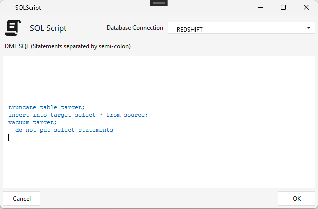
⚠️ Known caveat: Maestro splits the script on
;, so every statement must end with;— and a;embedded inside a statement (e.g. in a string literal) can break the split.
Ssh¶
Type SSH · WPF Steps/Common/SSH.cs → SSHWindow.xaml ("Execute Shell Command (SSH)") ·
Runs a shell script on an SSH connection — you can invoke bash, Python, Ruby, Perl, etc. (Maestro writes the script to a temporary .sh file and runs it with bash).
- Shell Script tab — the SSH Connection and the script.
- Exit Status tab — how the step decides success:
- Use script return value — exit code 0 = success, non-zero = failure;
- Scan normal value in script output — success when the output contains the Scan Following Text (e.g. COMPLETED SUCCESSFULLY);
- Scan abnormal value in script output — failure when the output contains the text (e.g. CRITICAL ERROR).
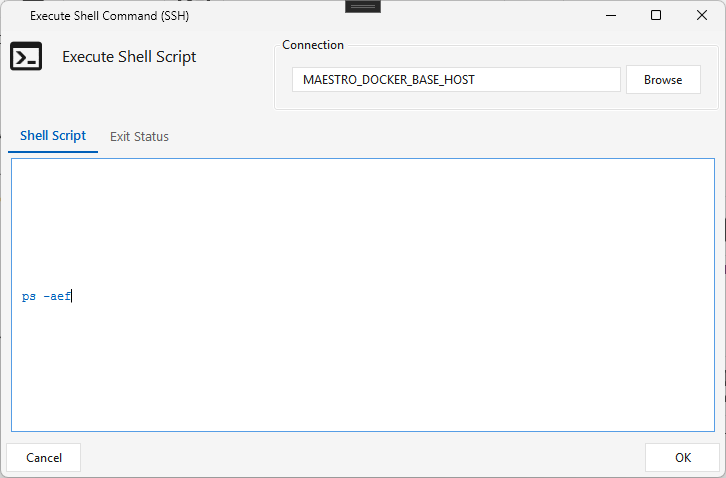
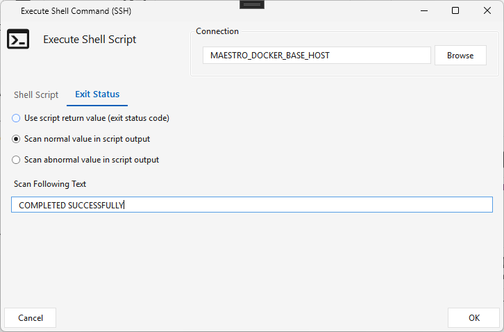
Job Step¶
Type JOBSTEP · WPF Steps/Common/JobStep.cs → JobStepWindow.xaml ("Run Workflow (Job)") ·
Runs another workflow (job) as a step — the basis for orchestration, repetition, and recovery. Pick a job from Available Jobs; one Job Step runs one job, and that job can itself contain Job Steps, so jobs nest to any depth (parent → children → grandchildren).
No loops. Maestro forbids recursive job graphs — a child (or any descendant) cannot point a Job Step back at an ancestor.
Automatic Recovery Options — the ACTION controls how the sub-job runs:
| Action | Behavior | Requires | Terminates when |
|---|---|---|---|
| DO_NOTHING | Runs once in default mode and returns (no recovery). | — | automatically |
| RESTART | Re-runs until the expected outcome is reached. | UNTIL state, Max Run Count, Sleep Interval | parent terminated manually · or max run count reached · or last run state matches the UNTIL value (e.g. COMPLETE) |
| RUN_LIMIT_LOOP | Loops a fixed number of times. | Max Run Count, Sleep Interval | parent terminated manually · or max run count reached |
| RUN_FOREVER | Runs perpetually. | Sleep Interval | parent terminated manually |
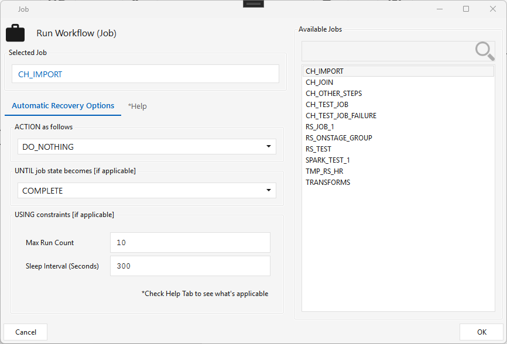
Export¶
| ⬜ | Step | Type | What it does |
|---|---|---|---|
| 🟢 | Write Jdbc | WRITEJDBC |
Exports the input rows to an existing table on another JDBC database (does not create the table — use the DDL Template to build it first). 1 input. |
Write Jdbc¶
Type WRITEJDBC · WPF Steps/CommonTransform/WriteJdbc.cs → WriteJdbcWindow.xaml ("Write to JDBC Target") · 1 input
Exports the incoming rows into another database over JDBC. It needs an upstream data source (a Table step or the output of any transform) and writes to an existing target table.
The target table must already exist — Write Jdbc does not create it. Click DDL Template to preview a
CREATE TABLEfor the incoming columns, create that table manually on the target connection (adjusting types per the template's notes — e.g.timestamp→datetimefor SQL Server), then Browse to select it.
- Target Load Options — Records per batch commit, Print verbose message on batch count, Attribute enclosed by (quote char), and the DDL Template preview button.
- Target Table (Existing) — Connection, Catalog, Schema, Table (via Browse), and Truncate Target Table.
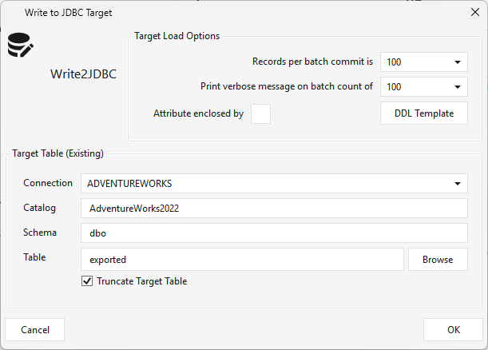
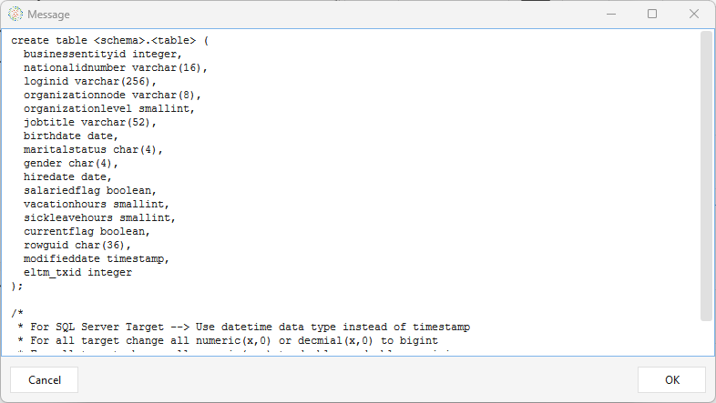
⚠️ Tested targets: export is validated against SQL Server, Postgres, and Oracle targets; other JDBC targets are not yet tested.
MPP-common steps¶
On the in-scope MPP platforms (Redshift, Snowflake, ClickHouse) but not SparkSQL.
| ⬜ | Step | Type | What it does | Notes |
|---|---|---|---|---|
| 🟢 | Table | TABLE |
Reads from / writes to a referenced table. Construct: Existing · Create · Temp. Load Options: Truncate · Run Statistics (GENERATE STATISTICS) · Run Vacuum (GROOM) · Upsert (update+insert by Key). Column flags: Cluster/Dist/Sort · Key (needed for Upsert) · Ident. |
Add/remove columns only for Create/Temp |
| 🟢 | View | VIEW |
References an existing database view (database / schema / view) and brings its columns into the pipeline as a read source — no input; output columns = the view's columns. | |
| 🟢 | Sql Metrics | SQLMETRICS |
Runs a selected set of data-quality / rowcount metrics (from the metrics catalog — metrics.dq_definition) against the source and/or target. Pick the metric list and toggle Run Source / Run Target. |
DQ / observability |
| 🟢 | Write File | WRITEFILE |
Exports a SQL query result (on the platform connection) to delimited flat files on the server — set the SQL, output directory, file prefix / extension (default .psv), delimiter (\|), per-file size MB (split, default 128), gzip, auto-clean, sanitize, and fetch size. |
Export |
| 🟢 | SCD1 | SCD1 |
Slowly Changing Dimension Type-1 — upserts into a target dimension, overwriting changed attributes in place (no history, unlike SCD2). Set target catalog / schema / table and mark each column Match / Change / Ignore. 1 input. |
All MPP except ClickHouse |
| 🟢 | SCD2 | SCD2 |
Slowly Changing Dimension Type-2 — keeps history via effective/expiration timestamps (current row's exp_ts = 9999-12-31). Mark each column M (match/identity) · C (track change) · X (ignore), and designate the dim-id / eff-ts / exp-ts columns. On a change it expires the old row and inserts a new current row. |
All MPP (ClickHouse included) |
Platform-specific steps¶
Each platform has its own load target (JdbcTarget<Platform>) and, in some cases, a staging/file step. Same pattern, per-platform implementation.
Redshift¶
| ⬜ | Step | Type | What it does |
|---|---|---|---|
| 🟢 | Jdbc Target Redshift | JDBCTARGETREDSHIFT |
Corelli loader — loads a Jdbcsource's staged files into Redshift via S3 + COPY; incremental delta-watermark. |
| 🟢 | Redshift Stage | REDSHIFTSTAGE |
Stages a Local File's parquet output to S3, creates a temp Redshift table, bulk-loads the staged files, then cleans them up. Used in the Local File → Redshift Stage → Table pipeline; pick the S3 Connection + IAM or KEY auth. |
| 🟢 | Copy Into Redshift | COPYINTORS |
Copies an S3 object (Parquet/CSV) into a Redshift temp table via COPY, then feeds a Table step. A source step (no input arrow); columns come from a schema profile written by JdbcTargetParquet. Pick the S3 Connection, object path (bucket-relative), format, and IAM/KEY auth. See Loading S3 Parquet into Redshift. |
| 🟢 | Local File | LOCAL_FILE |
Reads flat files from the local filesystem into the pipeline (a file source). |
| 🟢 | Dataframe | DATAFRAME |
Reads HDFS file(s)/folder into a Spark data frame + a temp global view (Parquet/Orc/Csv/Json/Text); reader or writer per the arrow direction. Write Option: truncate / append / upsert-append. Output Mode: All Rows · Delta Passthrough (rows from this run) · Last Inserted Version (needs key columns). |
Jdbc Target Redshift¶
Type JDBCTARGETREDSHIFT · WPF Steps/Pipeline/JdbcTargetRedShift.cs → JdbcTargetRedShiftWindow.xaml ("Redshift Target — Corelli Parallel Loader") · requires an upstream Jdbcsource
The target half of the Corelli pipeline: it loads the flat files staged by a Jdbcsource into Redshift. It only works downstream of a Jdbcsource (not other step types).
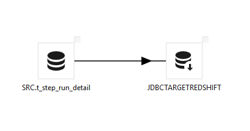
Target Table tab — connection, catalog/db, schema, table. Check Table Exists if the target already exists; leave it unchecked to have Maestro create it. Truncate and Loader Threads as needed.
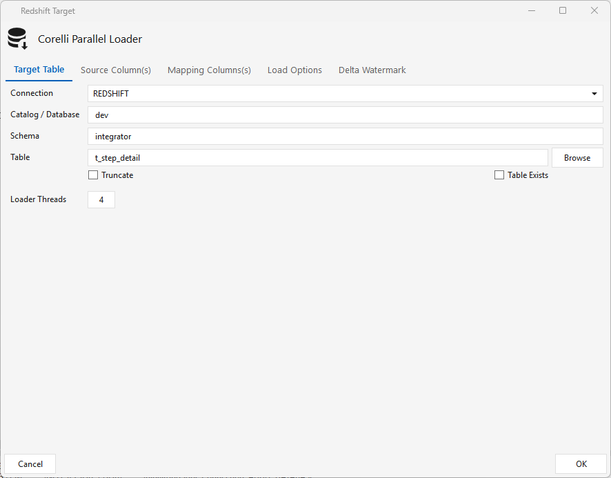
Source Column(s) tab — click Refresh to pull the incoming columns; use the pencil icon to correct any data types that look wrong.
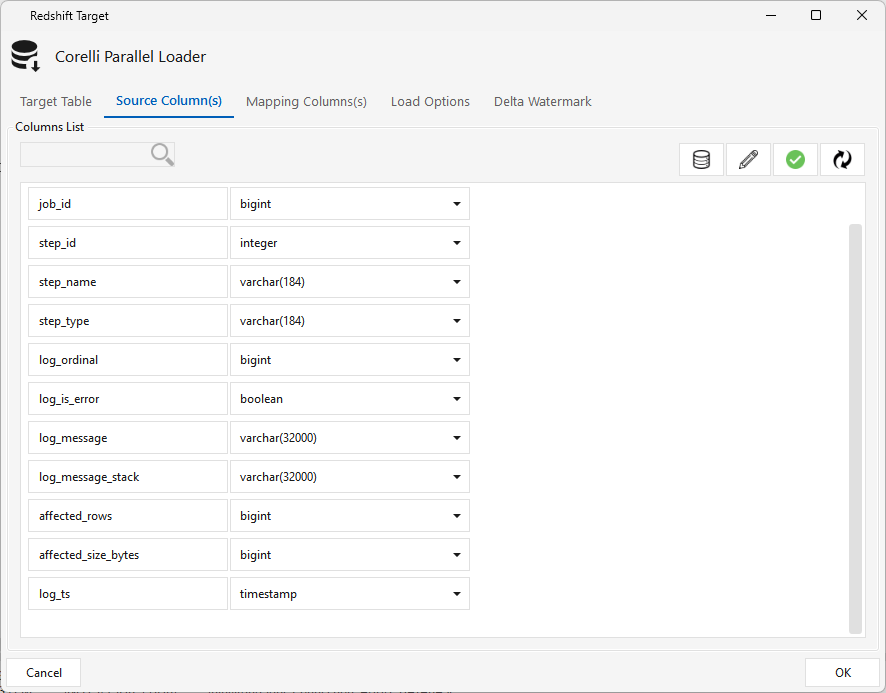
Mapping Columns(s) tab — click Reset to auto-map source → target columns, then adjust as needed.
Load Options tab — the staging commands (under $OBJECTSTORAGE): S3 Upload (aws s3 cp to S3), S3 Clean (aws s3 rm --recursive after load), and Copy/Load (Redshift COPY … iam_role … gzip). Maestro runs the AWS CLI to push the files to S3, runs COPY, then removes the staged files on success. Don't change the $VARIABLE placeholders.
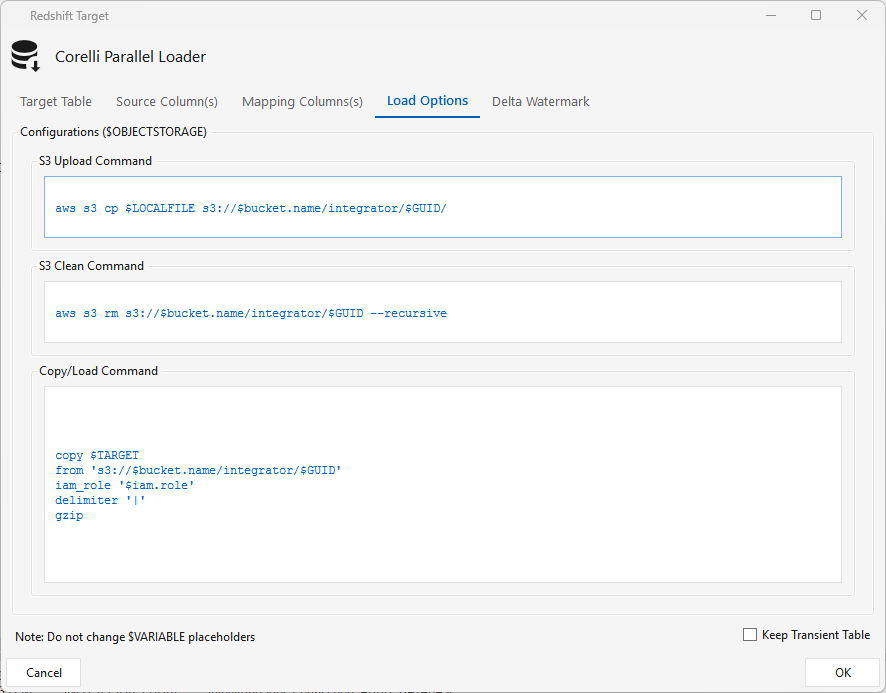
Delta Watermark tab — a query that runs on the target (SELECT MAX($COLUMN) FROM $TARGET). When a watermark/Delta column is set on the Jdbcsource and the job runs on a schedule (e.g. hourly), this MAX value becomes the source's $EXTRACT_CONDITION filter, so data loads incrementally.
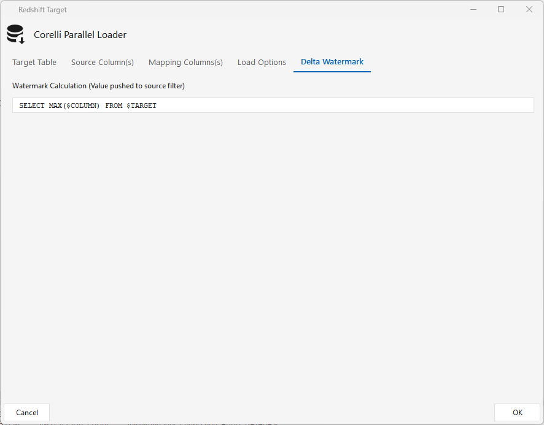
Copy Into Redshift¶
Type COPYINTORS · WPF Steps/Redshift/CopyIntoRS.cs → CopyIntoRSWindow.xaml ("Copy Into Redshift") · add from REDSHIFT ▸ DATA SOURCE
A source step (no input arrow) that bulk-loads an S3 object into a Redshift temp table with COPY, then feeds a downstream Table step. It's the consumer half of the Parquet → Redshift pattern: JdbcTargetParquet produces the Parquet + a schema profile, and this step reads that profile (via Browse Profile) to build a matching temp table.
- S3 Connection — an AWS S3 connection; the bucket is taken from it.
- S3 Object Path — the key relative to the bucket (no
s3://, no bucket), e.g.exports/ProductPhoto/2026-07-05. - Format —
csv/psv/tsv/parquet; changing it re-seeds Format Options (parquet clears + disables the box). - Authentication Mode — IAM (
iam_role) or KEY (access/secret key), resolved from the S3 connection. - Browse Profile — loads the Redshift-typed columns (including the
eltm_txidload id) from aJdbcTargetParquetprofile.
Full walkthrough, the generated COPY, and troubleshooting: Loading S3 Parquet into Redshift.
Snowflake¶
| ⬜ | Step | Type | What it does |
|---|---|---|---|
| 🟢 | File Loader | FILELOADER |
Loads flat files into an existing table whose structure matches the file (output → a Table step). Source files come from an Onstage Group step, SFTP, or the ELT Maestro server; external-table load options are customizable. |
| 🟢 | Jdbc Target Snowflake | JDBCTARGETSNOWFLAKE |
Corelli loader — the Snowflake target half of a Jdbcsource → JdbcTargetSnowflake pipeline (requires an upstream Jdbcsource); same shape as the other JdbcTarget* loaders. Loads the source's staged files into Snowflake via COPY INTO $TARGET FROM $STAGEPATH with the CORELLI_FORMAT_PIPE0 file format. Tabs: Target Table (connection / catalog / schema / table · Truncate · Loader Threads) · Source Column(s) · Mapping Column(s) · Load Options (the COPY command) · Delta Watermark (SELECT MAX($COLUMN) FROM $TARGET, incremental). |
ClickHouse¶
| ⬜ | Step | Type | What it does |
|---|---|---|---|
| 🟢 | Jdbc Target Clickhouse | JDBCTARGETCLICKHOUSE |
Corelli loader — the ClickHouse target half of a Jdbcsource → JdbcTargetClickhouse pipeline (requires an upstream Jdbcsource); same shape as the other JdbcTarget* loaders. Difference: it loads files directly to the ClickHouse server via clickhouse-client (… INSERT INTO $TARGET FORMAT CSV < $LOCALFILE) rather than staging through S3 — so the ELT Maestro host must have clickhouse-client installed and the load command configured (the $MPP_HOST / $DELIMITER / $TARGET placeholders come from the integrator's system.cfg; see CLICKHOUSE-AUTH.md). Tabs: Target Table (connection / catalog / schema / table · Truncate · Loader Threads) · Source Column(s) · Mapping Column(s) · Load Options · Delta Watermark (SELECT MAX($COLUMN) FROM $TARGET, incremental). |
| ⬜ | Write Incident | WRITEINCIDENT |
TBD |
| 🟢 | Dataframe | DATAFRAME |
Reads HDFS file(s)/folder into a Spark data frame + a temp global view (Parquet/Orc/Csv/Json/Text); reader or writer per the arrow direction. Write Option: truncate / append / upsert-append. Output Mode: All Rows · Delta Passthrough (rows from this run) · Last Inserted Version (needs key columns). |
SparkSQL¶
| ⬜ | Step | Type | What it does |
|---|---|---|---|
| 🟢 | Dataframe | DATAFRAME |
Reads HDFS file(s)/folder into a Spark data frame + a temp global view (Parquet/Orc/Csv/Json/Text); reader or writer per the arrow direction. Write Option: truncate / append / upsert-append. Output Mode: All Rows · Delta Passthrough (rows from this run) · Last Inserted Version (needs key columns). |
| 🟢 | Local File | LOCAL_FILE |
Reads flat files from the local filesystem into the pipeline (a file source). |
| 🟢 | Jdbc Target HDFS | JDBCTARGETHDFS |
Corelli HDFS Spark DataFrame loader — the SparkSQL target half of a Jdbcsource → JdbcTargetHDFS pipeline (requires an upstream Jdbcsource). Writes the source's rows to an HDFS Target Path as snappy-compressed Parquet. Loader Threads · Truncate · Source Column(s) refresh (typed for SparkSQL) · Mapping Column(s) auto-map (Reset / Check). |
| 🟢 | Spark Data Cache | SPARKDATACACHE |
Caches a data frame to disk/memory — a Spark persist (same output as input). Storage levels: DISK_ONLY, MEMORY_AND_DISK, MEMORY_ONLY(_SER/_2), … |
| 🟢 | Aggregate | AGGREGATE |
Performs aggregations — pick Group column(s) and f(Agg) column(s) (sum/avg/…); the UI suggests output names/types. (Spark's classic aggregate; the expression-builder equivalent is Aggregate2.) |
| 🟢 | Onstage Delta | ONSTAGEDELTA |
Continuous loop delta loader (SparkSQL-only) — runs in a perpetual loop, polling a source Table/View every Delay (Seconds) (default 60) and merging only rows past a watermark (WM Col/Expr) into the target, starting from a configurable StartWM Value. Source + Target each take connection / database / schema / table + watermark expression (DummySQL = a placeholder query); Mapping Column(s) maps source→target. |
| 🟢 | Export | EXPORT |
Exports the incoming Spark data frame to a local destination folder on the ELT Maestro server in a chosen File Format (default Parquet). 1 input; the column list lets you mark Key column(s). |
| 🟢 | ML Feature Trainer | MLFEATURETRAINER |
Trains one or more Spark MLlib models on the input data frame — pick ID, Feature, and Label column(s), add the model(s) to train, and name the Model Topic. 1 input. (Step label: "Train <topic> with N model(s)".) |
| 🟢 | ML Feature Predictor | MLFEATUREPREDICTOR |
Scores the input data frame with previously-trained Spark MLlib models — pick the Topic Path, the Model(s), Feature + ID column(s), and output file parts (default 4). Emits the ID columns plus features, rawPrediction, probability, topicDistribution, prediction, ml_model_name, ml_timestamp. |
| 🟢 | ML Feature Engineer | MLFEATUREENGINEER |
Builds engineered feature columns via a list of actions — each applies a Spark MLlib transform (action type) to an input column, producing a new output column. Output = input columns + the new engineered columns. |
| 🟢 | ML Poly Feature Engineer | MLPOLYFEATUREENGINEER |
Like ML Feature Engineer, but applies a single Spark MLlib feature-engineering rule (transName/transType) across multiple input columns at once, producing the corresponding output column(s) appended to the input data frame. |
Tie-back to architecture¶
The steps above aren't an undifferentiated toolbox — each one belongs to a stage of a Bronze → Silver → Gold medallion pipeline. This is the step → layer view (the reverse of MEDALLION.md, which goes layer → step); use it to decide where a step belongs when you build a workflow. Scoped to the documented platforms (Redshift, Snowflake, ClickHouse, SparkSQL).
🥉 Bronze — raw landing / ingestion¶
Capture faithfully, transform minimally, append-only.
| Role | Steps |
|---|---|
| Pull / extract | Jdbcsource, Datasource, Local File, Sftp, Pull File |
| Land to the lake / target | Jdbc Target HDFS (Parquet to HDFS), Onstage Group (multi-table → parquet/external tables), Onstage Delta (continuous-loop landing) |
| Arrival triggers | File Watch, JDBC Watch, Script Watch, File Scanner, Remote File Scanner |
| Incremental capture | Watermark (+ the isCDC delta primitive), Set Variable |
🥈 Silver — cleaned, conformed, validated¶
Idempotent and re-runnable; gate promotion on data quality.
| Role | Steps |
|---|---|
| Clean / shape | Filter, Dedupe, Function2 (derivations), Datamask (PII), View, Pivot |
| Conform / integrate | Join, Union, Minus, Spark Data Cache |
| Historize dimensions | SCD1, SCD2 |
| Quality gate (Bronze→Silver) | Control Test, Sql Metrics, Meta Profile, Write Incident (quarantine bad rows) |
🥇 Gold — business marts / serving¶
Business-grain, serving-optimized.
| Role | Steps |
|---|---|
| Aggregate / model | Aggregate, Aggregate2, Table (+ Onstage Group loaders) |
| Publish to serving MPP | Jdbc Target Redshift / Snowflake / Clickhouse / HDFS, Redshift Stage, File Loader, Write Jdbc, Write File, Export |
| ML feature / serving | ML Feature Engineer, ML Poly Feature Engineer, ML Feature Trainer, ML Feature Predictor |
The orchestration spine (cross-layer)¶
These don't belong to one layer — they wire the layers together into one end-to-end pipeline: Job Step (chain Bronze→Silver→Gold workflows), Switch / Set Variable / Sync (conditional flow + barriers), SQL Script / SSH / Smart Script (custom logic + maintenance), and Push File / Pull File / Sftp (movement between systems). See the orchestration spine and the Silver quality gate for how scheduling, alerting, and DQ gating stitch a tiered pipeline together.